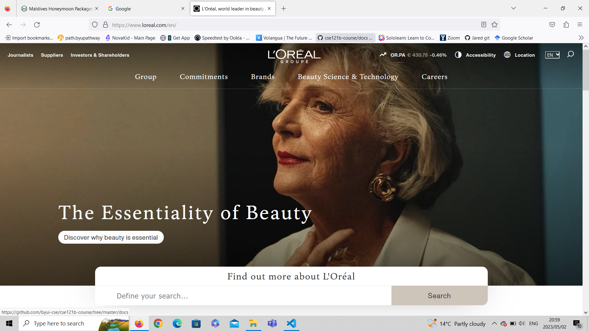

Fitt's Law
Although one could utilize the main page of google.com as an example of the effective use of multiple design principles, here we will use it as an example of the effective use of "Fitt's Law".
The spacing and page layout allows one to have complete access and movement to the page's facilities with very little movement of one's mouse. The most common reason anyone visits google is to use the google search engine and this has been carfully centered in the middle of the page, and although there is a lot of white space between the search engine and the sites other features, the width is so that very little mouse movement is needed to move from the search bar to site's other features (found in the top right corner). The other features are also aligned neatly in a row, and include a menu option, thus preventing clutter and keeping one's options together.
Rule of Thirds
L'Oréal
If one looks at the image of the lady, her face lines up with the centre of the screen while the rest of here head and body are on the right side of the image. The message "The Essentiality of Beauty" is displayed on the Left of the image,then expanding to the centre. Each of these act as sperate focal points, the face, the body, and the message.
This layout causes the viewer's eyes to jump between focal points, clearly illustrating the message along with emphasizing and drawning out an intended emotional response from the image.
White-space
Facebook utilizes large amounts of white-space between different sections of their site. This creates a natural sepperation of the site's sections and features, it also voids cluttering, and makes the site more visually-appealing.
Facebook divides their page into three columns sepperated by white-space. These columns are spanning from left to right are the 'menu column', 'social-media feed', and the third column includes both advertizements and 'fb chat'. The white-space creates a clear sepperation in purpose of these areas for the user, it thus avoids any confusion of purpose when navigating the site whilst being visually-appealing.